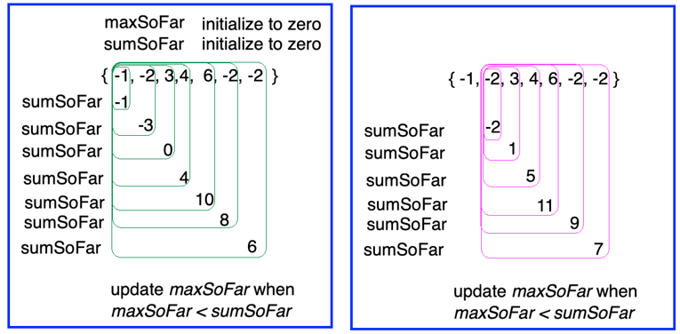

Homework 8 Recursion
This is an individual assignment
How to Import a ZIP File into Eclipse
Follow these steps to import a ZIP file containing an Eclipse project:
- Download the ZIP File (containing a project) to your computer but do not place in the eclipse workspace folder and do not unzip it: Click here to donwload ZIP
- Open Eclipse: Do not create a new project because the ZIP file contains an existing project.
-
Import the Project:
- Click on
Filein the menu bar and selectImport.... - In the Import Wizard, expand the General category and select Existing Projects into Workspace. Click Next.
- Select the Select archive file option and click the Browse... button
- Navigate to the location where you saved the ZIP file, select it, and click Open
- The wizard will display the project(s) contained in the ZIP file. Make sure the desired project is checked
- Check if the box Copy projects into workspace is selected
- Click Finish to complete the import process
- Click on
- Verify the Imported Project: The project should now appear in your Package Explorer. Double-click it to open and review its contents.
Problem Overview:
- This exercise is intended to give you practice writing recursive operations
- There are two parts:
- recursionPart1 contains 9 unimplemented recursive operations—implement each using recursion (no loops)
- recursionPart2 contains 3 unimplemented recursive operations—each requires a recursive **helper** (no loops)
- This is an individual exercise/assignment
Rubric:
All JUnit tests for each operation must succeed in order to earn a 100% for the assignment.
Your score for this assignment = PercentageJUnitTestsPassed × RecursionHWTotalPoints
For example:
- If
PercentageJUnitTestsPassed= 80% - and if
RecursionHWTotalPoints= 25 - then Your Score =
0.80 × 25 = 20points
To Do:
- In Eclipse, import this project (
HWRecursion) - Implement the 9 operations in
Part1Problems.java - Run the included
RunAllTestsPart1.javato ensure all tests pass - Implement the 3 operations in
Part2Problems.java - Run the included
RunAllTestsPart2.javato ensure all tests pass - Upload your completed
Part1Problems.javato Homework 8 Part 1 andPart2Problems.javasubmit to Gradescope Homework 8 Part 2 - Make sure to update your Javadoc comment with your name and any citations (this is individual work)
Hint:
The last problem is a good challenge. The following image might help guide your approach:
Notes:
- No loops allowed: You should not use any
fororwhileloops; all iteration must be via recursion. - If you use loops in your solution you may receive 0% credit even if tests pass.
- Each method’s specification appears as a comment just above its declaration.
- Part 1: Implement each operation directly using recursion.
- Part 2: For each operation, create and implement a
privatehelper method that carries any extra parameters (e.g., accumulators or indices), then call that helper from the public method. - Declaring the helpers as
privateprevents clients from calling them directly—this is good encapsulation practice.